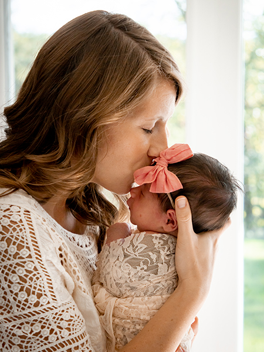

Image Quality Review
Cassie Cay Photography - Optimization Comparison
How to Review
- SKIN TONES: Look for the "watercolor effect" where skin appears overly smoothed or painted
- FINE DETAIL: Check hair strands, eyelashes, fabric texture - these should remain sharp
- COLOR ACCURACY: Compare colors between original and optimized - they should match closely
- CONTRAST: Especially important for the B&W image - blacks and whites should remain crisp
CONSERVATIVE Settings Used: AVIF quality 85, WebP quality 85, JPEG quality 90 - these are intentionally higher than typical web optimization to preserve photography portfolio quality.
To Zoom In
- Right-click any image and select "Open Image in New Tab"
- Or click the image to open it directly
- Compare the same area across Original, AVIF, WebP, and JPEG versions
Tip: Pay special attention to faces in portraits and soft skin in newborn images - these are the most sensitive to compression artifacts.
67%
Overall Size Reduction
Q85/85/90
AVIF / WebP / JPEG
80MB to 26MB
Payload Reduction
cassiecay-F1-full.png
Family Portrait - Check skin tones and fine hair detail

AVIF (Q85)
102 KB-88%

WebP (Q85)
67 KB-92%

JPEG (Q90)
105 KB-87%
cassiecay-NB18-crop.jpg
Newborn - Check soft skin texture and delicate features

Original (JPEG)
250 KB

AVIF (Q85)
87 KB-65%

WebP (Q85)
56 KB-78%

JPEG (Q90)
70 KB-72%
cassiecay-NB17-full.jpg
Newborn Full Size - Check soft lighting and delicate features at full resolution

AVIF (Q85)
210 KB-66%

WebP (Q85)
138 KB-78%

JPEG (Q90)
163 KB-74%
cassiecay-E1-full.png
Engagement/Couples - Check skin tones and outdoor lighting

AVIF (Q85)
72 KB-90%

WebP (Q85)
49 KB-93%

JPEG (Q90)
82 KB-88%
cassiecay-senior3-full.png
Senior Portrait - Check face detail and background quality

AVIF (Q85)
23 KB-89%

WebP (Q85)
22 KB-90%

JPEG (Q90)
43 KB-80%
cassiecay-aboutbw.jpg
Black & White - Check contrast preservation and tonal range

AVIF (Q85)
37 KB-61%

WebP (Q85)
26 KB-72%

JPEG (Q90)
36 KB-62%
cassiecay-slider7.jpg
Hero Slider - Most prominent image on site, check overall quality at large size

AVIF (Q85)
469 KB-62%

WebP (Q85)
259 KB-79%

JPEG (Q90)
348 KB-72%
cassiecay-NB5-full.png
Newborn Full (PNG) - Check soft skin preservation in PNG source

AVIF (Q85)
100 KB-87%

WebP (Q85)
66 KB-91%

JPEG (Q90)
99 KB-87%
Ready for Your Review
Please review each image comparison above, paying special attention to skin tones and fine detail.
If quality is acceptable: Reply "approved"
If issues found: Describe which images and what you see
Quality Settings Reference
| Format |
Quality Setting |
Typical Web |
Notes |
| AVIF |
85 |
60-70 |
Conservative to preserve skin tones |
| WebP |
85 |
75-80 |
Higher than typical for detail |
| JPEG |
90 |
80-85 |
MozJPEG encoder, progressive |